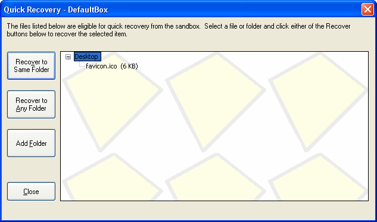

Quick Recovery
Sandboxie Control > Sandbox Menu > Quick Recovery
Sandboxie Control > Tray Icon Menu > Quick Recovery

Sandboxed programs create files and folders inside the sandbox. It may be desirable to move some of these created files out of the sandbox. For instance, a document file downloaded by a sandboxed browser is saved into the sandbox, but that file should be extracted and placed in the Documents folder outside the sandbox.
The rudimentary approach is to use the regular, non-sandboxed Windows Explorer to navigate inside the folders that make up the sandbox. By using the Sandbox Menu > Sandbox > Explore Contents command, you can open a folder window (unsandboxed) with a view into the sandbox. You can then navigate in the depth of the sandbox folder, and cut sandboxed files in order to paste them somewhere else.
The Quick Recovery feature makes it easier to extract files (and even whole folders) that are created and saved by sandboxed programs. It scans a few sandboxed folders, which have to be selected in advance, and lists the files (and folders) it finds within them. These files (and folders) can be recovered into the corresponding location outside the sandbox, or to any location.
To invoke the Quick Recovery window, use the Sandbox Menu > Sandbox > Quick Recovery command (or the corresponding command from the Tray Icon Menu). Quick Recovery also appear as part of the Delete Sandbox window.
The Quick Recovery Window
The central area which extends to the lower right corner of the window shows the quick-recoverable files and folders in a particular sandbox. Select a file or folder, and then click one of the two Recover to buttons on the left:
-
Recover to Same Folder moves the file (or folder) from the sandbox to a corresponding location outside the sandbox. For example, the picture above shows the file favicon.ico in the sandboxed Desktop folder. Clicking this command on the file will move it to the real desktop folder.
-
Recover to Any Folder first displays a Browse For Folder dialog box, then moves the file (or folder) to the folder selected in the dialog box.
These commands are also available if you invoke the context menu on a file or folder, typically by clicking the right mouse button on it.
Adding Folders to Quick Recovery
As noted, Quick Recovery only scans folders which are explicitly selected. By default, it scans the Desktop, Favorites and Documents folders. Where applicable, your Downloads folder is also considered a recoverable folder.
-
You can add more folders using the Add Folder button.
-
You can use Sandbox Settings > Recovery > Quick Recovery to add and remove folders.
-
When Sandboxie Control is in Files And Folders View view, you can right-click a folder and select Add Folder to Quick Recovery.
Go to Delete Sandbox, Immediate Recovery, Sandboxie Control, Help Topics.